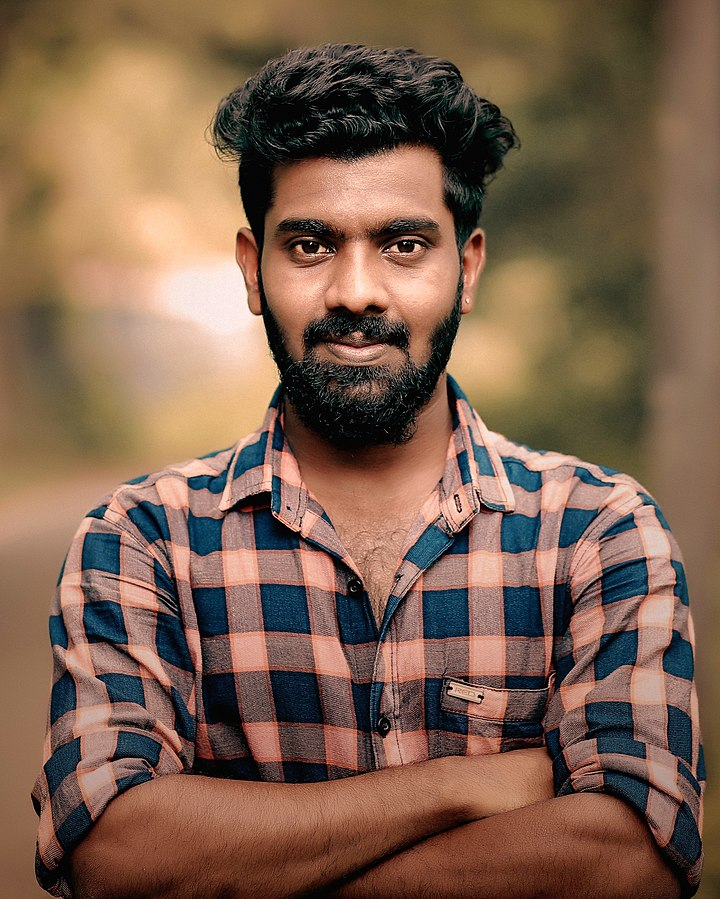

Dmytro Novak
Front-End Developer
Contact Details
- tel. 0995005550
- email. 7501541@gmail.com
- Poltava, Ukraine
Education
Poltava University of Consumer Cooperation of Ukraine
International Economics
2003-2008
Work Experience
-
Grant Writer at Freelance
11/2023 – Present
- Grant Application Preparation and Submition
- Project Assesment
- Budget Planning
- Reporting
-
Project Manager at CO Light of Hope
5/2021 – 2/2024
- Project Management
- Team Management
- Expenses Control
- Budget Planing
- Monitoring & Evaluation
- Stuff Coordination
- Communication with Donor Organizations
-
Event Manager at Freelance
11/2008 – 5/2021
- Event Management
- Financial Management
- Team Coordination
- Budget Planing
Languages
- English
- Ukrainian
- Spanish
Hard Skills
- Project management
- Grant management
- Leadership and team management
- Problem-solving and decision-making
- Negotiations and presentations
- Strategic planning
Soft Skills
- Analytical thinking
- Positive attitude
- Adaptability and flexibility
- Effective communication skills
- High level of self-organization
- Dedicated team player